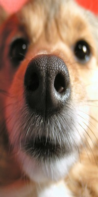

Article 1

Not a lot of people realise
that dogs and cats can get
sunburnt. This means that
they do not think about
protecting their pets when
the sun is out. Light-
coloured dogs and cats or
those without a lot of hair
are particularly at risk. Vets
advise that the best
preventative measure is to
keep your pet indoors while
the sun is at its hottest -
between 11:00am and
3:00pm. They also advise
that, just like humans,
sunscreen or sunblock can
be applied to protect them.
|
Article 2
Most people think puppies
are cute little bundles of fun
– and they are. However,
they can also be
destructive. Chewing
appears to be a major
hobby of theirs! Chewing is
very important when
puppies are teething. They
are just like babies where
chewing can help to break
the skin on the gums and
help to bring forward the
teeth.
|